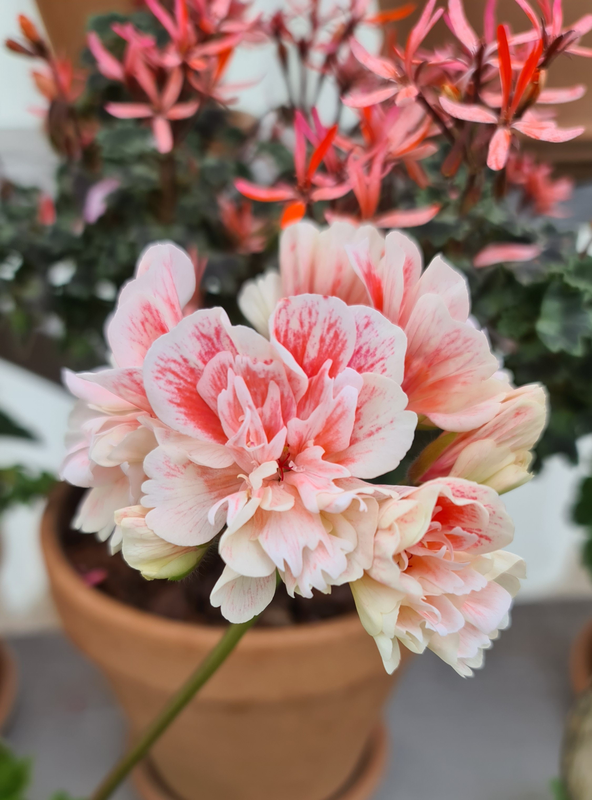
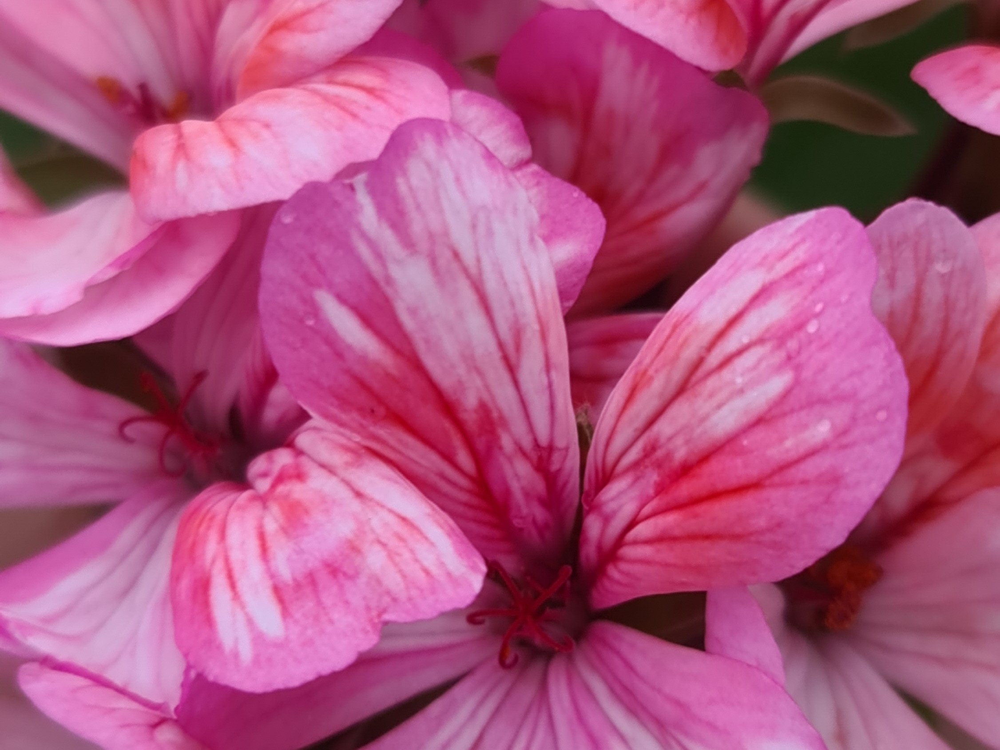
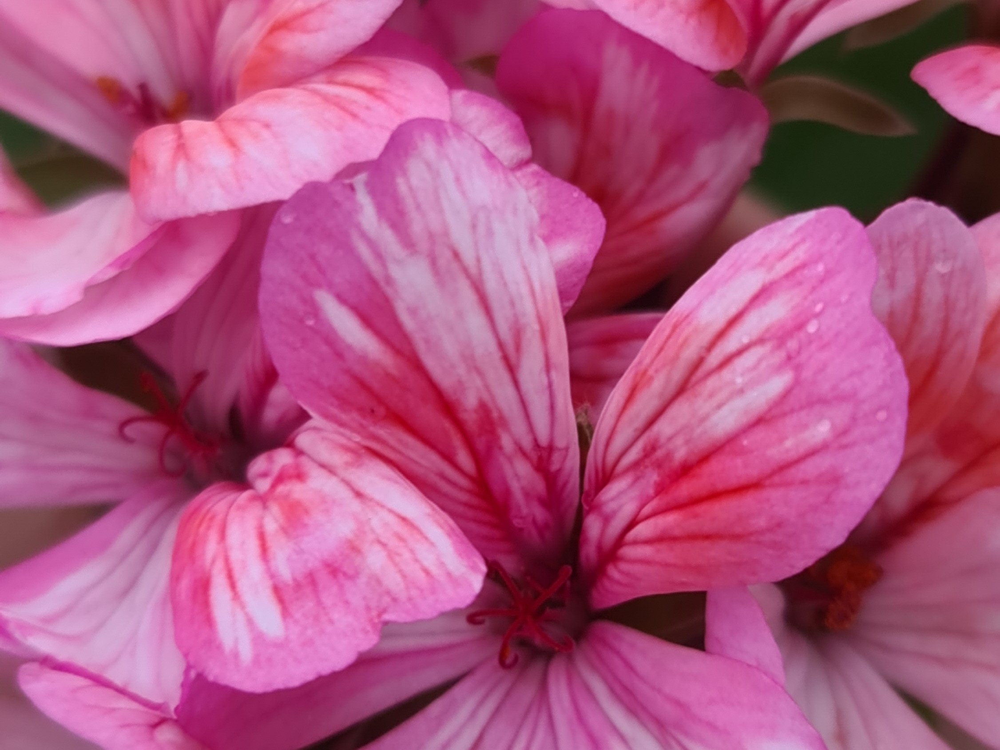
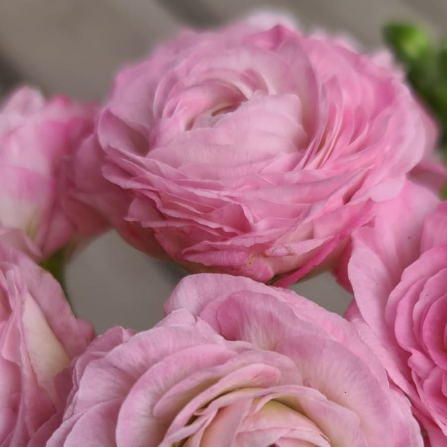
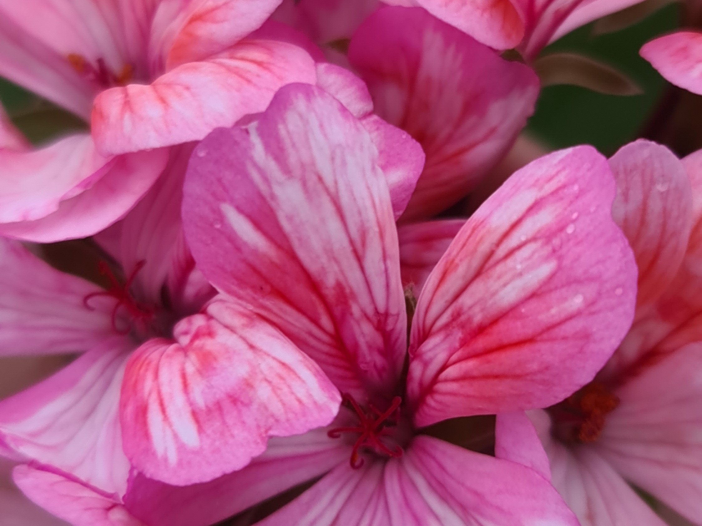
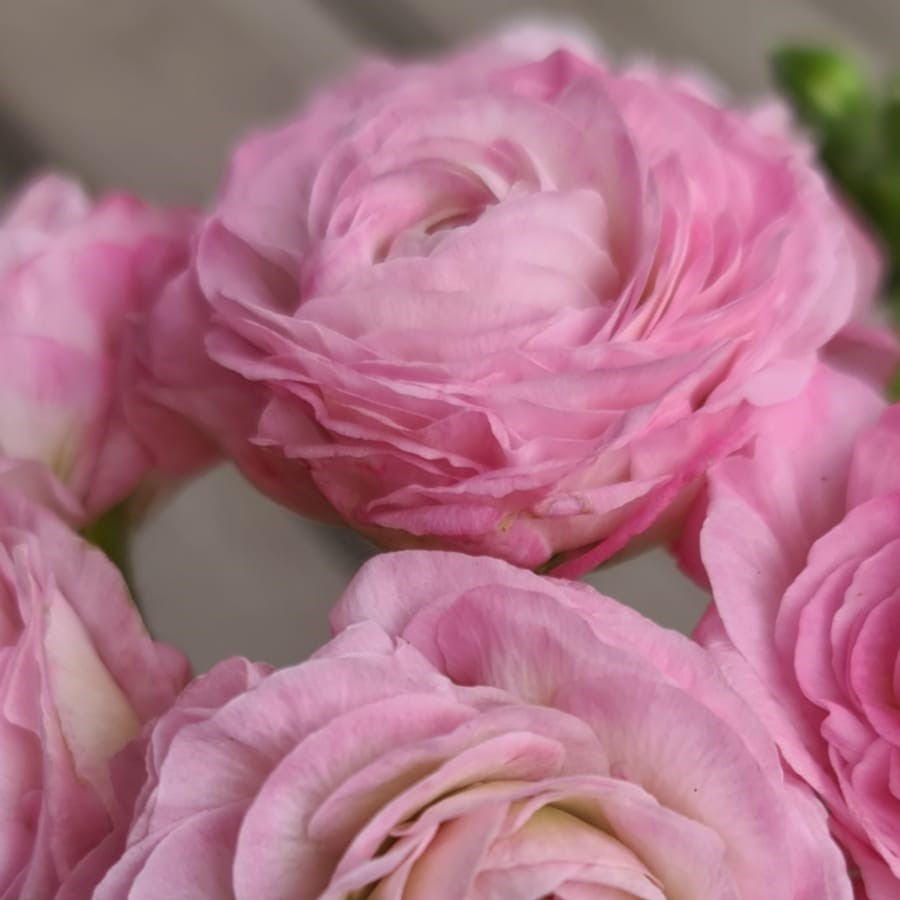
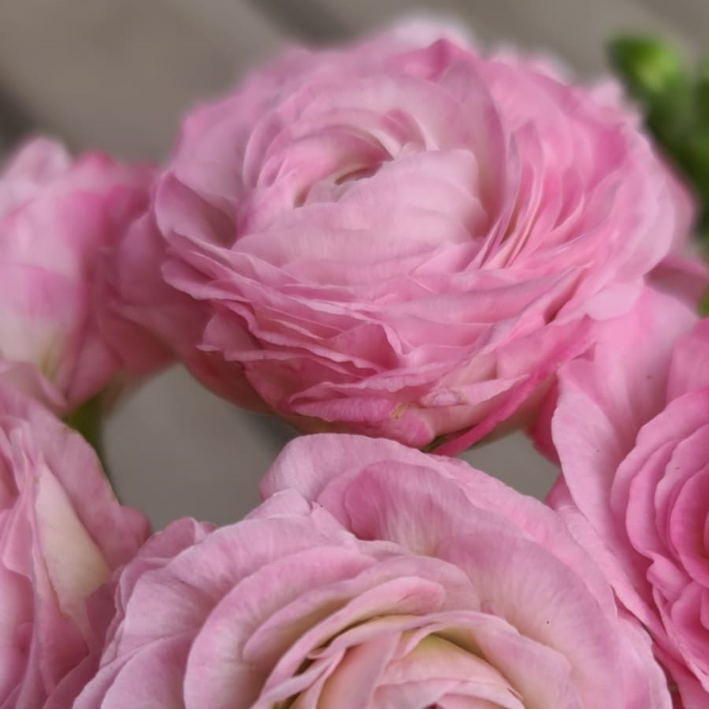
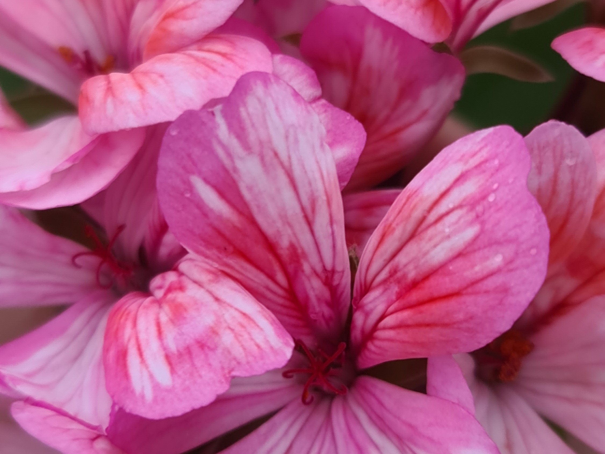
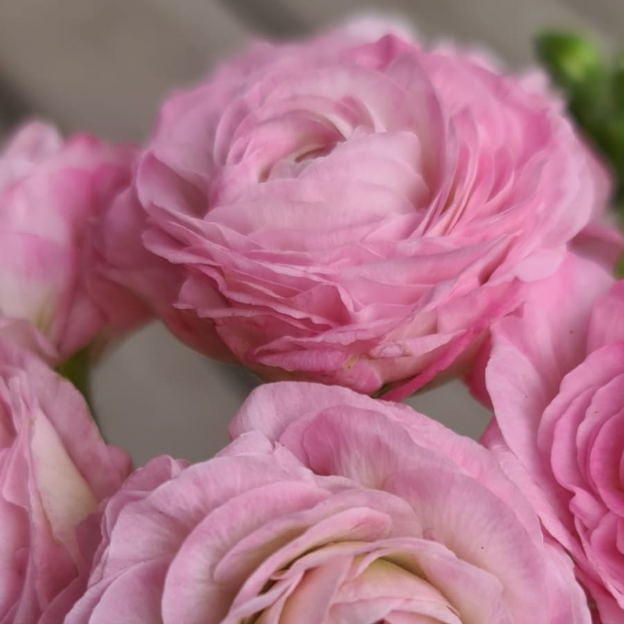

Photo wall
 

 





It all starts with a seed. Maybe you have pollinated the mother of the seed so you know the father or nature had its own way. Either way it's time to put the seed in soil. There's a lot of different ways to hatch a seed, but that my friend is a whole different story.
Oh the seed has start growing, that's a good start. Not all seeds have the power to start growing. The first leaf on the sprout is called heart leaf. That's because they always look the same, like small hearts. It's first when you reach the next step you will be able to see the shape of the real leafs (Just like a baby a sprout needs to be taken care of. It's really important it does not get dry).
Now you can see the real leafs. Maybe they are light green or darker? Maybe the leafs are round or have sharp edges? Already here you can find out some things about your new plant. Pelargoniums come in many different sorts. Some processors that wants a special shape on the leaf, for example Zonartic can already in this step throw some clones away.
Waiting and waiting.... Now you need to wait for the plant to bloom. It can take from six months to several years depending on how flowerly your plant is. Maybe this sounds boring? Yeah, but when you can see the first bud rising it's all worth it! Unless the flower is not what you had expected or if it looks like any of the other thousands already existing sorts. Better luck next time!
Flower power! The plant is blooming so now the process to get at stable plant must be
done? Sorry, the answer is no. To be able to say you have a stable plant you need to have taken a clone on
your young plant. That clone in turn needs to grow up and bloom so you can see that the flower still looks the
same. This you need to do three times before you can call your plant stable.
Your plant is now a great great grandmother!
As you can understand the way from seed to flower is long and it's only a few of all the seeds you put in the
soil that reach this step. But if you made it this far you now have your very own Pelargonium. Now it's time
for the easy part, give your Pelargonium a name!